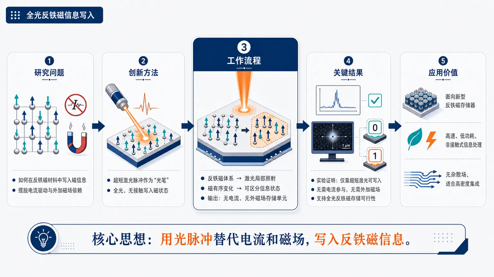
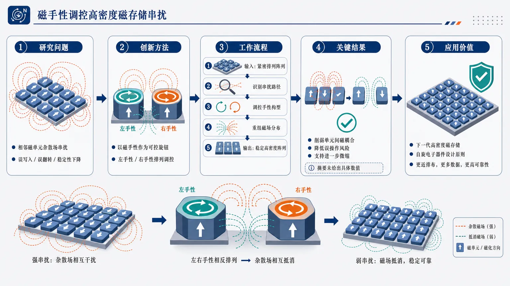

AI × Science 文献日报 2026/07/05
聚焦 AI × 物理 / 化学 / 材料交叉方向，自动过滤明显偏题的医学、教育与社会科学内容，并按主题重新排版，便于快速深读。
AI | 物理 | 化学 | 材料 | 交叉学科
核心关注（ML × ferro / 凝聚态）
1 篇今日条目不是 NbOI2、CrI3、CrSBr、BaTiO3 上的 equivariant GNN、MACE、NEP 或 DFT+U 性质预测进展，而是反铁磁体的超短激光脉冲写入实验新闻。实质进展是用反铁磁序承载信息，并由纯光场完成磁态写入，去掉写入电流和外加磁场。对 ML × 凝聚态研究者，直接切入点是用 DFT+U、TDDFT 或自旋动力学产生光诱导轨迹，再用 equivariant GNN、MACE、NEP 学习自旋-晶格耦合与写入阈值。
-
01光写入反铁磁体指向新型存储Optical writing of antiferromagnets points toward new storage devices and energy efficient information systems
📄 摘要：德国—日本团队在反铁磁体中用超短激光脉冲写入磁信息，无需电流或外加磁场。体系利用反铁磁序作为信息载体，结论是纯光场可完成磁态写入，面向无电流焦耳热、无磁场线圈的节能存储和信息处理器件。
💡 亮点：超短激光脉冲可直接写入反铁磁体磁信息，摆脱电流和磁场驱动。反铁磁序的快速、低杂散场特性使其更接近低功耗高速存储器件。
📐 方法要点：超短激光脉冲纯光写入反铁磁序，无电流、无外磁场。
🔗 相关工作关联：呼应反铁磁自旋电子学、光诱导磁相变、超快自旋动力学、低功耗磁存储。
💡 对你方向的启示：可将泵浦-探测或 DFT+U 自旋轨迹转为训练集，建模光写入阈值与稳定性。
今日摘要
总览：今日两篇文献均聚焦磁性信息存储：一篇报道反铁磁体的纯光写入，另一篇讨论通过磁手性控制降低高密度磁存储中的串扰。共同指向以反铁磁序、手性磁结构替代传统磁化强度编码的低功耗、高密度存储路线。
热点：磁存储研究正在从电流或外磁场驱动转向光场、手性等内部自由度调控。反铁磁体因无宏观杂散场、动力学快，适合能效更高的信息写入；手性磁结构则可缓解器件缩小后的邻近单元相互作用。现有报道偏向概念验证和物理机制展示，下一步关键在材料选择、可重复写入、读出方案与器件级集成。
今日文献
2 篇 · 2 含图深析-
01
📊 含图深析
📄 摘要：德国—日本团队在反铁磁体中用超短激光脉冲写入磁信息，无需电流或外加磁场。体系利用反铁磁序作为信息载体，结论是纯光场可完成磁态写入，面向无电流焦耳热、无磁场线圈的节能存储和信息处理器件。
💡 亮点：超短激光脉冲可直接写入反铁磁体磁信息，摆脱电流和磁场驱动。反铁磁序的快速、低杂散场特性使其更接近低功耗高速存储器件。
📖 展开分析 + 配图

研究问题如何在反铁磁材料中写入磁信息，同时摆脱传统方案对电流驱动或外加磁场的依赖，为高速、低功耗存储寻找新路径。创新方法使用超短激光脉冲直接作为“光笔”写入反铁磁磁状态；Aha 点在于用光脉冲替代电流和磁场，实现全光、无接触、潜在低能耗的反铁磁信息写入。工作流程输入为待写入的反铁磁体系；超短激光脉冲照射材料局部区域；光脉冲触发反铁磁内部磁有序状态变化；材料形成可区分的磁信息状态；输出为无需电流、无需外磁场写入的反铁磁存储单元。关键结果实验证明反铁磁体系中可以仅靠超短激光脉冲写入磁信息；写入过程不需要电流参与，也不需要外加磁场；结果支持全光反铁磁存储器件的可行性，但具体能耗、保持时间、写入速度和循环稳定性未在摘要中给出。应用价值为新型反铁磁存储器和节能信息系统提供方向；反铁磁材料无杂散场、响应快、适合高密度集成，结合全光写入有望发展高速、低功耗、非接触式信息处理硬件。核心概览
该论文属于反铁磁自旋电子学/光控磁存储方向。研究展示德国—日本团队可用超短激光脉冲在反铁磁体中写入磁信息，无需电流或外加磁场，指向低能耗存储与信息处理器件。
方法要点
- 采用超短激光脉冲作为写入手段，直接调控反铁磁体的磁态。
- 利用反铁磁序作为信息载体，而非传统铁磁磁化强度。
- 写入过程不依赖电流注入，因此避免由电流导致的焦耳热。
- 写入过程不需要外加磁场，因此无需磁场线圈辅助。
- 具体材料体系、激光参数、读出方式和器件结构摘要未详述。
关键结果
- 摘要明确称，纯光场可以完成反铁磁体中的磁态写入。
- 该写入过程无需电流或外加磁场。
- 研究表明反铁磁序可作为磁信息载体用于信息存储。
- 该方案被认为有望用于节能型存储和信息处理器件。
- 关于写入速度、能耗、稳定性、循环寿命、空间分辨率等具体性能指标，摘要未详述。
创新性判断
- 可能的新颖点在于：用纯光场实现反铁磁体磁信息写入，减少对电流驱动或磁场驱动方案的依赖。
- 相比常见电流驱动自旋轨道力矩写入或磁场辅助写入，该工作突出“无电流、无外磁场”的光学写入路径，潜在能耗优势明显。
- 反铁磁体本身具有无宏观杂散场、潜在高速动力学等方向优势，但摘要未展开，不能确认该论文是否实验证明了这些性能。
- 其创新性具体强度取决于材料选择、可逆性、可重复写入、读出机制和器件化程度；这些摘要未详述，因此只能判断其可能贡献在“纯光写入反铁磁信息态”的概念与实验展示。
-
02
📄 摘要：面向磁硬盘等磁存储器件，缩小磁性单元时，单元产生的杂散磁场会影响邻近元件并导致误操作。通过控制磁手性而非仅依赖普通磁化方向编码，可降低高密度排列中的相互干扰，从而支持更紧凑的数据存储。
💡 亮点：控制磁手性为高密度磁存储提供新的编码与稳定化自由度。该路线针对缩小器件中的杂散场串扰，可提升磁单元紧密排布能力。
📖 展开分析 + 配图

研究问题高密度磁存储器件不断微缩时，相邻磁单元之间的杂散磁场会像彼此干扰的微小磁针一样产生串扰，导致误写入、误翻转和数据稳定性下降；核心问题是如何在更小间距下削弱这种单元间磁耦合，从而继续提升存储密度。创新方法论文的 Aha 点是把“磁手性”作为新的可控旋钮：通过设计或调控磁结构的左手性/右手性排列，使相邻磁单元产生的杂散场相互抵消或减弱，而不是单纯依赖拉大间距、增加屏蔽层或常规材料优化。工作流程输入为紧密排列的磁存储单元阵列；识别相邻单元之间的杂散场耦合与串扰路径；调控每个磁结构的手性方向或手性构型；重新组织单元周围的磁场分布；降低相邻单元间的非期望相互作用；输出更稳定、更适合高密度排列的磁存储阵列。关键结果控制磁手性有望明显缓解高密度磁存储中的相邻单元串扰，减少杂散场引发的误操作风险，并为磁存储器件进一步缩小尺寸、提高数据存储密度提供方向性证据；摘要未给出具体密度提升、误码率或性能数值。应用价值该研究为下一代高密度磁存储和自旋电子器件提供新的设计原则：利用磁手性管理微尺度磁场相互作用，让存储单元可以排布得更近，从而在有限芯片面积中容纳更多数据，并提升器件可靠性。核心概览
该论文属于磁存储/自旋电子学方向，讨论通过控制磁手性来编码或调控信息，以降低高密度磁存储单元间的杂散场干扰，从而提升数据存储密度。
方法要点
- 面向磁硬盘等磁存储器件中的高密度磁性单元排列问题。
- 将“磁手性”作为可控物理自由度，而不只依赖普通磁化方向进行信息编码。
- 目标是减少相邻存储单元之间由杂散磁场引起的相互影响。
- 摘要未详述具体材料体系、器件结构、实验方法或理论模型。
关键结果
- 缩小磁性单元会增强邻近元件间的杂散磁场影响，可能导致误操作。
- 控制磁手性可降低高密度排列中存储单元之间的相互干扰。
- 该策略有望支持更紧凑的数据存储，即提高磁存储密度。
- 摘要未给出定量性能提升、误码率变化或存储密度提升幅度。
创新性判断
- 可能的新颖点在于：将磁手性作为信息控制或编码的核心变量，用以缓解传统磁化方向编码在高密度集成时的串扰问题。
- 相比仅通过缩小单元尺寸或优化磁化方向的常规思路，该工作可能提供了一种利用磁结构内部拓扑/手性特征来提升存储密度的方案。
- 但由于摘要未详述具体实现方式、材料平台和实验验证程度，其创新性强弱仍无法确定。